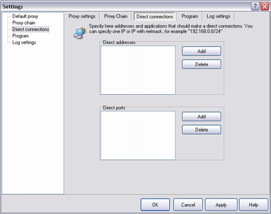
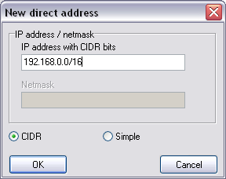

When you're sitting in a LAN and working as Internet as local resources, the following page may be useful for you:

Here you can specify addresses and ports that shouldn't be used for proxy traversing. In fact the LAN address range may be very large you can specify addresses in the e.g.
CIDR-notation.

For example record "192.168.0.0/16" means that for all addresses from 192.168.0.1 to 192.168.254.254 tunneling mechanism will not be used.
Number "16" means how much significant bits contains in the subnet mask. And it is equivalent to "255.255.0.0"
 Cunsult with your system administrator about your LAN addresses.
Cunsult with your system administrator about your LAN addresses.
|
|